Lior Nønne Malue Hansen is a Danish artist working with large-scale sculpture and installations that explore ecology, politics,
poetics, psychology and the contradictions of being human in late-stage capitalism. Her practice engages discarded materials to
question systems of value and function. Merging poetic absurdity with tactile precision, the works often resemble a surreal
collision between amusement park and junk yard — evoking both vulnerability and resilience. Educated at the Royal Institute of Art,
Stockholm, she collects, rebuilds and reflects, constructing layered worlds that ask not only what it means to feel, but how we make
sense of it all.
I et forsøg på at få verden til at give mening bedriver jeg en skabende praktik i løs form. Med de værktøjer, materialer og
tilfældigheder som jeg ligger under for gør jeg det bedste jeg kan for at udleve min del af menneskets indre og ydre kamp imod det
kaos som er universet, måske endda selve livet, på en måde som er sensorisk tiltalende.
Year: 2020. Material: Damaged trampoline, a cancelled Olympics and a global pandemic
STRIVING NOT TO PLEASE BUT TO OUTSMART THE GODS WE HAVE BEEN ACTING OUT THE OLDEST PLAY OF HUBRIS KNOWN TO MODERN MAN CRAVING ABSOLUTE
PERFECTION AND THE POWER OF THE CROWN LOOKING BOLDLY TO THE EAGLES FLYING EVER SO HIGH AND FREE NEMESIS HIT US LIKE A BAT
MAKING OUR INTERDEPENDENCY OUR COLLECTIVE ACHILLES HEEL
A fully compactible space/time-specific more-than-full-room installation made entirely of repurposed materials.
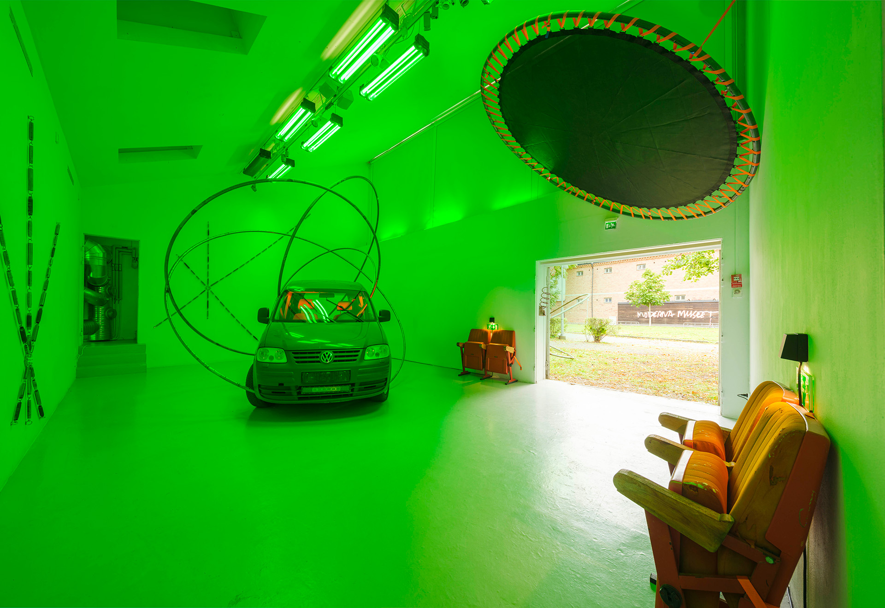
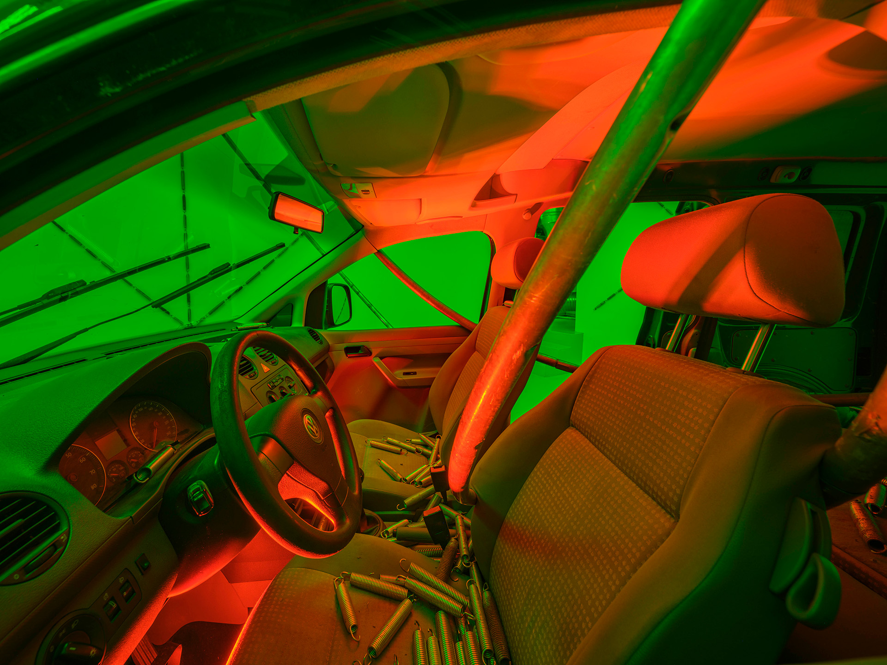
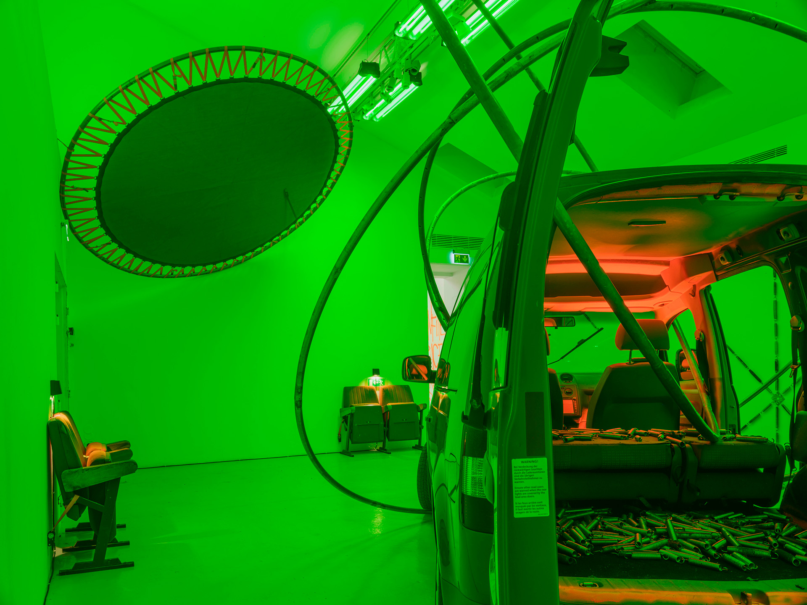
I AM NATURE LOOKING INTO NATURE
Year: 2019. Materials: Steel, acrylic mirror, rust-dyed canvas, nylon net, fresh mosses from an area highly affected by
radioactive pollution
There lies some beauty In the ambivalence Of recreational areas Atop landfills and polluted ground I like the idea Of a collective
healing And I wonder If us embracing Mother Earth Where she hurts the most Will allow her love To seep into the brokenness Of our
modern ways And bring round a sense of Unity in diversity We have clearly lost
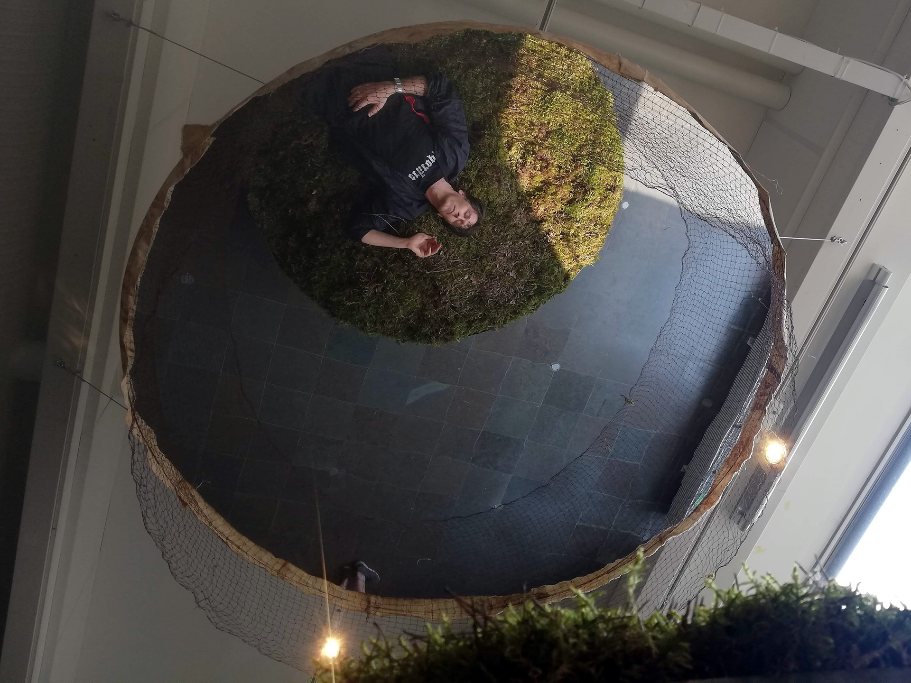
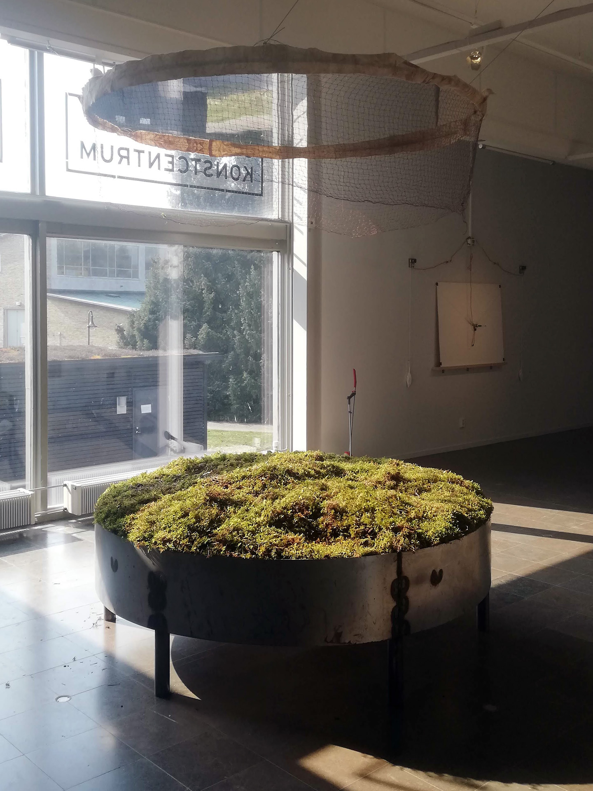
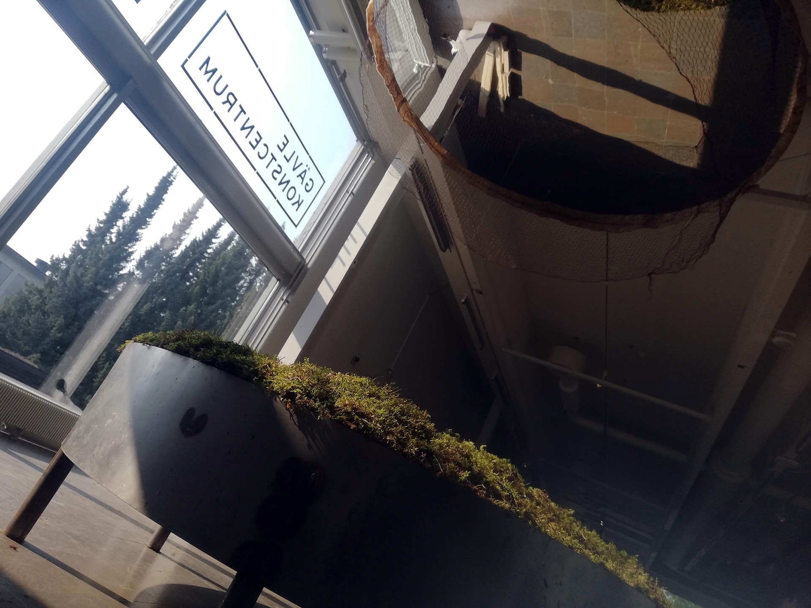
ĀLAYA-VIJÑĀNA
Year: 2023. Materials: 1000kg mixed material from the artist’s own collection, (potentially misconceived) care, and a wish for
second chances.
They say care is heavy work. Mine weighs a ton. Ālaya-vijñāna (storehouse consciousness) is a term from Buddhism. It is the place
in our (sub/un)consciousness where unprocessed trauma is stored throughout lifetime after lifetime, and from where our core
behavioural patterns are shaped.
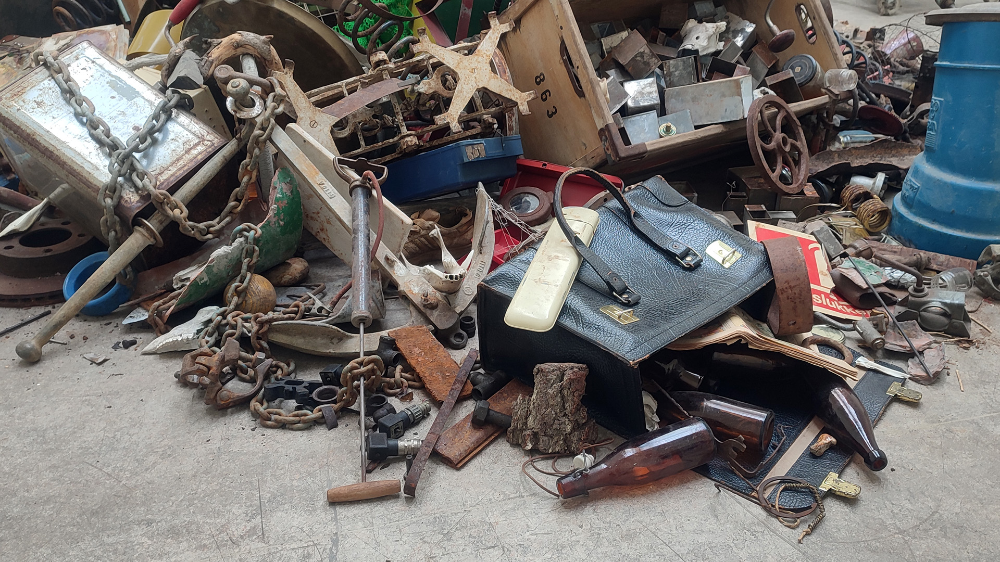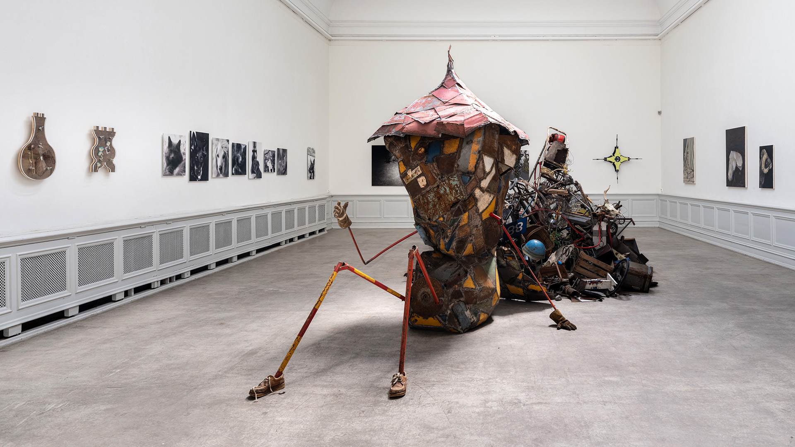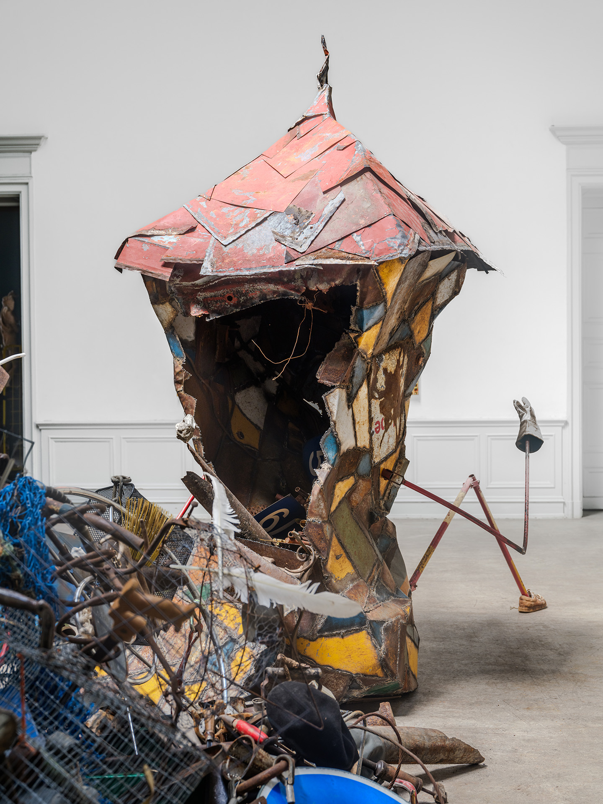
IMPLODE/EXPLODE
Year: 2024. Performative installation of metal sculpture.
Expansion was always my goal. Bigger, better, wiser. An outward movement of body, mind and spirit. Pushing boundaries in all 12
dimensions. Horizons merely a point on the way to a potential end-destination. I had to learn and re-learn the hard way that every
now and again you need to bring it back to center. Collect. Integrate. Rest. Start over.
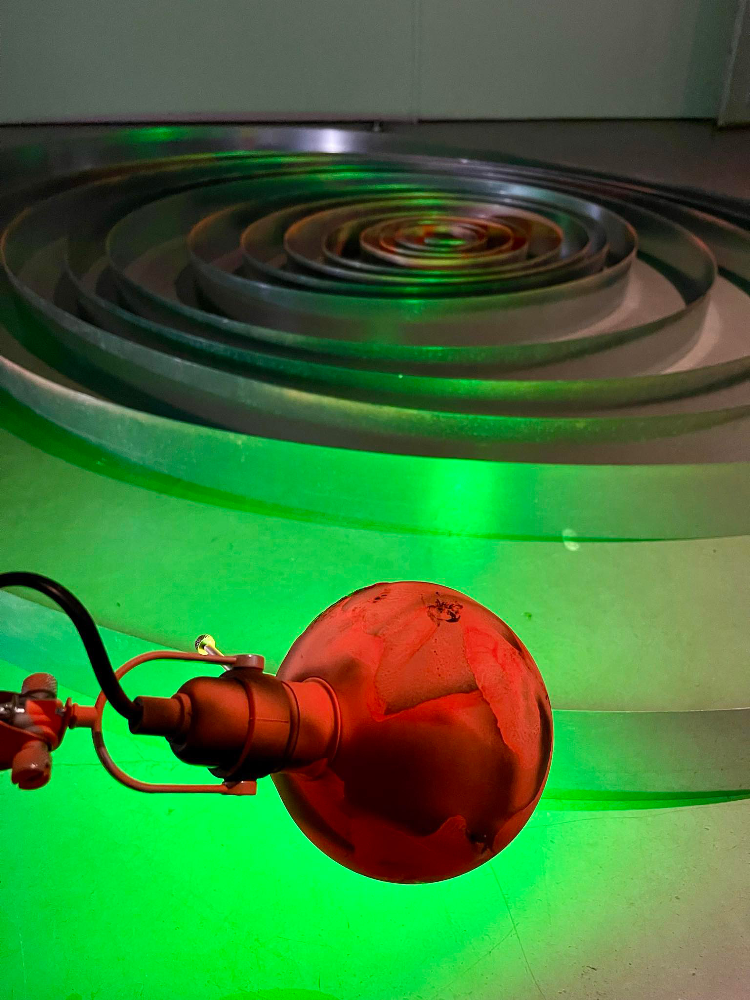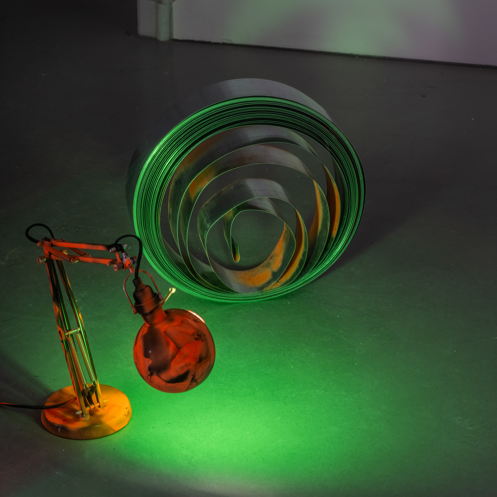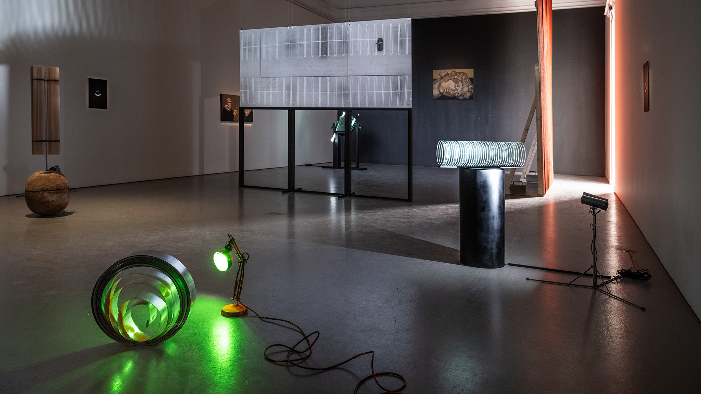
AN INFLEXIBLE FLEX | WHEN TOLD TO JUMP ASK WHY
Year: 2024. Materials: Old trampoline parts, straps, fluorescent spray paint
My paper-documented inflexible brain bends over backwards to jump through the bureaucratically eroding loopholes of the societal
gameplay to eliminate entropy in the polished introverse named Sweden. Breaking the norms is a full-time job on a no time dime.